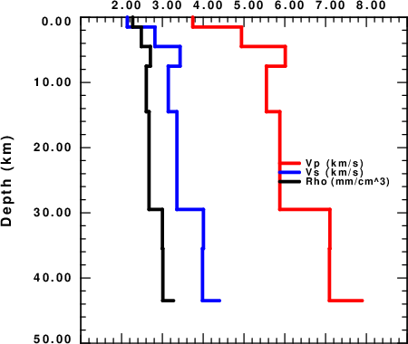

The online help from shwmod96 -h is
Usage: shwmod96 -XLEN xlen -YLEN ylen -X0 x0 -Y0 y0 -VMIN vmin -VMAX vmax -ZMIN zmin -ZMAX zmax -K kolor [-P -S -D -QP -QS ] [ -W width ] [-NOLABX -NOLABY] [-LEG] model96_file[s] [ -DT lintyp ] [ -XY ]
-XLEN xlen (default 6.0 ) Length of horizontal axis
-YLEN ylen (default 6.0 ) Length of depth axis
-X0 x0 (default 2.0 ) (x0,y0) are lower left corner
-Y0 y0 (default 1.0 )
-K kolor (default 1 ) Profile in color if kolor < 0 use red->blue progression
-VMIN vmin (default 2.0 ) Minimum value of horizontal
-VMAX vmax (default 5.0 ) Minimum value of horizontal
-ZMIN zmin (default 0.0 ) Minimum value of depth axis
-ZMAX zmax (default 60. ) Minimum value of horizontal axis
-W width (default 0.001) Width of line (inch) for model plot
-NOLABX (default label X) Do not label X-axis
-NOLABY (default label Y) Do not label Y-axis
-LEG (default none) Put in file legend
-LEGIN (default none) Put in file legend inside frame
-P (default S ) plot P-velocity
-S (default S ) plot S-velocity
-D (default S ) plot density
-QP (default S ) plot 1/QP
-QS (default S ) plot 1/QS
-DT linetype (default solid) linetype= solid short long
-XY (default false) create xy file of (z,val)
If the model file is Model.mod, the xy file name is
Model.mod.VP.xy if the -P flag is used
Model.mod.VS.xy if the -S flag is used
Model.mod.DEN.xy if the -D flag is used
Model.mod.QPI.xy if the -QP flag is used to plot 1/QP
Model.mod.QSI.xy if the -QS flag is used to plot 1/QS
-? (default none ) this help message
-h (default none ) this help message
For this tutorial, three velocity models are used:
Three scripts and correspond figures are presented below.
#!/bin/sh
#####
# clean up
#####
rm *.eps *.PLT
#####
# you may wish to change the dimensions of the plot here
# and the position of the identification lables that
# are defined later in this script
#####
#####
# plot Vp Vs and Density for one model
# on one figure
#####
#####
# set plot parameters
#####
MODELNAME="nnCIA.mod"
XLEN=6.0
YLEN=6.0
ZMAX=50.0
VMIN=1.0
VMAX=9.0
X0=2.0
Y0=1.0
WIDTH=0.03
RED=2
BLUE=4
BLACK=1
for TYPE in P S D
do
case $TYPE in
P) COLOR=${RED} ;;
S) COLOR=${BLUE} ;;
D) COLOR=${BLACK} ;;
esac
shwmod96 -X0 ${X0} -Y0 ${Y0} -XLEN ${XLEN} -YLEN ${YLEN} -VMIN ${VMIN} -VMAX ${VMAX} -ZMIN 0.0 -ZMAX ${ZMAX} -${TYPE} -K ${COLOR} -W ${WIDTH} -M ${MODELNAME}
#####
# now use reframe to crop the X-axis title
# later we will use calplt to add this information
#####
cat SHWMOD96.PLT | reframe -N1 -O -YH+7200 > ${TYPE}.PLT
rm SHWMOD96.PLT
done
#####
# combine all three onto one plot
#####
cat ?.PLT > ALL.PLT
#####
# put in a color key using calplt
#####
set -x
SIZE=0.1
YPOS=`echo $Y0 $YLEN | awk '{print $1 + 0.9*$2}'`
YPOSL=`echo $YPOS $SIZE | awk '{print $1 - 0.5*$2}' `
XLL=` echo $X0 $XLEN | awk '{print $1 + 0.70*$2}' `
XLH=` echo $X0 $XLEN | awk '{print $1 + 0.75*$2}' `
XLEGEND=`echo $X0 $XLEN | awk '{print $1 + 0.77*$2}' `
DY=`echo ${SIZE} | awk '{print 1.5*$1}' `
for TYPE in P S D
do
case $TYPE in
P) COLOR=${RED} ;STRING="Vp (km/s)";;
S) COLOR=${BLUE} ;STRING="Vs (km/s)";;
D) COLOR=${BLACK} ;STRING="Rho (gm/cm^3)";;
esac
calplt << EOF
NEWPEN
${COLOR}
GWIDTH
${WIDTH}
LINE
${XLL} ${YPOS} ${XLH} ${YPOS}
GWIDTH
0.00
NEWPEN
1
LEFT
${XLEGEND} ${YPOSL} ${SIZE} "${STRING}" 0.0
PEND
EOF
cat CALPLT.PLT >> ALL.PLT
rm CALPLT.PLT CALPLT.cmd
#####
# change the YPOS
#####
YPOS=`echo $YPOS ${DY} | awk '{print $1 - $2}' `
YPOSL=`echo $YPOS $SIZE | awk '{print $1 - 0.5*$2}' `
done
#####
# make the EPS and PNG (using ImageMagick)
#####
plotnps -F7 -W15 -EPS -K < ALL.PLT > ALL.eps
convert -trim ALL.eps -background white -alpha remove -alpha off ALL.png
rm ALL.eps
|
#!/bin/sh
#####
# test the xy output of shwmod96
# and then use genplt to plot the progiles
#####
#####
# create the xy files - this also creates SHWMOD.PLT which will be ignoted
#####
for T in P S D QP QS
do shwmod96 -XY -$T -M nnCIA.mod
rm SHWMOD96.PLT
done
#####
# now make Vp Vs Rho plot
#####
cat > lcmdfil << EOF
'nnCIA.mod.VP.xy' 2 0.05 'NO' 0.05 'Vp (km/s)'
'nnCIA.mod.VS.xy' 4 0.05 'NO' 0.05 'Vs (km/s)'
'nnCIA.mod.DEN.xy' 1 0.05 'NO' 0.05 'Rho (mm/cm^3)'
EOF
genplt -XMIN 0.0 -XMAX 50.0 -XDOWN -YMIN 1 -YMAX 9 -L lcmdfil -LPOS 'MR' -TX 'Depth (km)' -TY ' '
mv GENPLT.PLT PSD.PLT
#####
# now make Qp_inv Qs_inv plot using a log scale
######
cat > lcmdfil << EOF
'nnCIA.mod.QPI.xy' 2 0.05 'NO' 0.05 '1/Qp'
'nnCIA.mod.QSI.xy' 4 0.05 'NO' 0.05 '1/Qs'
EOF
genplt -XMIN 0.0 -XMAX 50.0 -XDOWN -YMIN 0.0001 -YMAX 1 -YLOG -L lcmdfil -LPOS 'MR' -TX 'Depth (km)' -TY ' '
mv GENPLT.PLT Q.PLT
rm -f GENPLT.PLT
#####
# amke the EPS and PNG (using ImageMagick)
#####
for i in *.PLT
do
B=`basename $i .PLT`
plotnps -F7 -W15 -EPS -K < ${i} > t.eps
convert -trim t.eps -background white -alpha remove -alpha off ${B}.png
rm -f t.eps
done
 |
 |
#!/bin/sh ##### # use shwmod96 to get VS.xy files for the nnCIA.mod CUS.mod and WUS.mod ##### shwmod96 -S -XY *.mod cat > lcmdfil << EOF 'nnCIA.mod.VS.xy' 1 0.02 'NO' 0.05 'nnCIA' 'CUS.mod.VS.xy' 2 0.02 'NO' 0.05 'CUS' 'WUS.mod.VS.xy' 4 0.02 'NO' 0.05 'WUS' EOF genplt -XMIN 0.0 -XMAX 50.0 -XDOWN -YMIN 1 -YMAX 9 -L lcmdfil -LPOS 'MR' -TX 'Depth (km)' -TY 'Vs (km/s) ' mv GENPLT.PLT VSmodels.PLT plotnps -F7 -W10 -EPS -K < VSmodels.PLT > t.eps convert -trim t.eps -background white -alpha remove -alpha off VSmodels.png rm t.eps